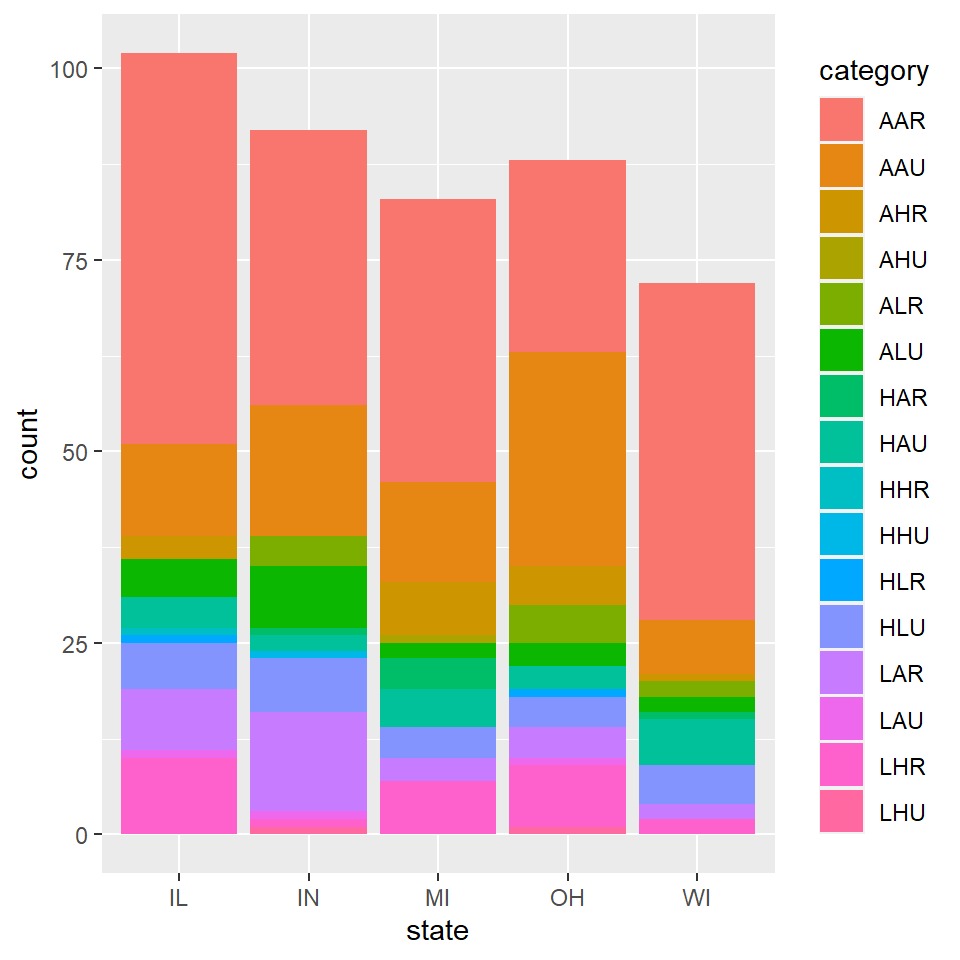

Lakshya Pratap
Graph 1: Bar Graph from Lab 03, Midwest Database
This graph shows that which state in the Midwest consists of what kind of categories. 
Graph 2: Map Of My City Jodhpur & Its famous Places/ Restaurants
Map from Lab 06
## min max
## x 73.02 73.15
## y 26.25 26.35Graph 3: The Graph from my favourite TV Show: Narcos
Graph from the learnings of Lab 07
## # A tibble: 20 x 6
## name sex nationality race birthyear season
## <chr> <chr> <chr> <chr> <dbl> <dbl>
## 1 Pablo Escobar M Colombian White 1949 2
## 2 Javier Pena M American White 1948 3
## 3 Steve Murphy M American White 1957 2
## 4 Gustavo Gaveria M Colombian White 1946 1
## 5 La Quica M Colombian Black 1965 2
## 6 Tata Escobar F Colombian White 1961 2
## 7 Valeria Velez F Colombian White 1949 2
## 8 Luis Fernando Duque M Colombian White 1952 2
## 9 Gilberto Rodriguez M Colombian White 1939 3
## 10 Miguel Rodriguez M Colombian White 1943 3
## 11 Hermilda Gaveria F Colombian White 1917 1
## 12 Fabio Ochoa M Colombian White 1957 1
## 13 Jorge Luis Ochoa M Colombian White 1950 1
## 14 Carlos Lehder M German White 1949 1
## 15 El Navegante M Colombian White 1946 3
## 16 Cesar Gaveria M Colombian White 1947 3
## 17 José Gonzalo Rodríguez Gacha M Puerto Rican Black 1947 1
## 18 Hugo Martinez M Colombian White 1941 2
## 19 El Lion M American White 1969 1
## 20 Diana Turbay F Colombian White 1950 2## # A tibble: 20 x 3
## from to type
## <chr> <chr> <chr>
## 1 Pablo Escobar Tata Escobar Family
## 2 Javier Pena Steve Murphy Partners
## 3 Steve Murphy Pablo Escobar Enemies
## 4 Gustavo Gaveria El Lion Partners
## 5 La Quica El Lion Partners
## 6 Tata Escobar Pablo Escobar Family
## 7 Valeria Velez Luis Fernando Duque Associates
## 8 Luis Fernando Duque Pablo Escobar Associates
## 9 Gilberto Rodriguez Miguel Rodriguez Partners
## 10 Miguel Rodriguez Gilberto Rodriguez Partners
## 11 Hermilda Gaveria Gustavo Gaveria Family
## 12 Fabio Ochoa Jorge Luis Ochoa Partners
## 13 Jorge Luis Ochoa Fabio Ochoa Partners
## 14 Carlos Lehder Pablo Escobar Partners
## 15 El Navegante Fabio Ochoa Partners
## 16 Cesar Gaveria Hugo Martinez Service
## 17 José Gonzalo Rodríguez Gacha Pablo Escobar Assiociates
## 18 Hugo Martinez Cesar Gaveria Service
## 19 El Lion Gustavo Gaveria Partners
## 20 Diana Turbay Cesar Gaveria Friends## # A tbl_graph: 20 nodes and 20 edges
## #
## # An undirected multigraph with 5 components
## #
## # Node Data: 20 x 6 (active)
## name sex nationality race birthyear season
## <chr> <chr> <chr> <chr> <dbl> <dbl>
## 1 Pablo Escobar M Colombian White 1949 2
## 2 Javier Pena M American White 1948 3
## 3 Steve Murphy M American White 1957 2
## 4 Gustavo Gaveria M Colombian White 1946 1
## 5 La Quica M Colombian Black 1965 2
## 6 Tata Escobar F Colombian White 1961 2
## # ... with 14 more rows
## #
## # Edge Data: 20 x 3
## from to type
## <int> <int> <chr>
## 1 1 6 Family
## 2 2 3 Partners
## 3 1 3 Enemies
## # ... with 17 more rows
Graph 2 from the same TV show.
Showing the relationship between the characters